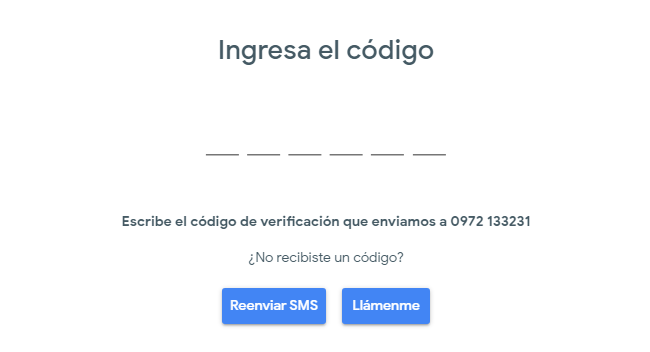

Google Duo
Esta app es uno de los grandes éxitos de Google, puesto que Duo puede funcionar al mismo rendimiento con distintas calidades de redes. Esto es posible ya que ajusta la calidad del vídeo a la velocidad de la red y, en el caso de que ésta sea demasiado lenta para mantener una videollamada, detendrá automáticamente el vídeo y mantendrá únicamente el audio de la llamada. Google promete un funcionamiento sin cortes en pocos segundos.
Además, durante la propia llamada puedes realizar ciertas acciones como intercambiar la visualización (viendo en grande nuestra imagen y no la del interlocutor), eliminar el audio, intercambiar las cámaras, etc.
Características
La principal característica de esta app es su simplicidad, busca la posibilidad de realizar videollamadas sin complicaciones y de una manera fácil de entender por cualquier usuario, tenga o no conocimientos previos. De modo que la app consta de una pantalla principal desde la que se realiza la videollamada y de un menú que se desplega en la esquina superior derecha. Se trata de una interfaz muy sencilla en cuyo inicio encontramos dos opciones: llamar a algún contacto reciente o iniciar una videollamada con otro usuario. En cuanto a los ajustes, encontramos pocas posibilidades: limitar el uso de datos móviles, poder dar de baja el número con el que la app está operando, las condiciones y la privacidad.
Para poder empezar las videollamadas simplemente necesitas el número de teléfono (igual que WhatsApp), no es necesario incluir el correo electrónico, de modo que tienes la opción de acceder a tu lista de contactos y ver quiénes tienen la app instalada y poder invitar a aquellos que no la tengan. De todos modos, existe la posibilidad de registrarse con Gmail o a través de un número de Google voice.
Google se desplaza así hacia lo básico en lo que a videollamadas se refiere. Con el lanzamiento de esta app, más sencilla que Hangouts, Google solo permite llamadas entre dos personas, abandonando las videollamadas grupales. Las llamadas tienen una duración de 30 segundos hasta que el receptor descuelga.
Formas de uso
Paso 1: Instala Duo
Duo está disponible para teléfonos y tablets. Cuando te registres, recibirás un código de verificación en tu teléfono.
Paso 2: Verifica tu número de teléfono
• Ingresa el número de teléfono y asegúrate de que sea correcto.
• Presiona Aceptar.
• Duo te enviará, por única vez, un código en un mensaje SMS al número que ingresaste (es posible que se apliquen las tarifas de tu proveedor para mensajes de texto).
• Ingresa el código que recibiste en el mensaje de texto.
• Si no lo recibes, presiona Reenviar SMS.
• Si tienes una conexión móvil y no recibes el SMS, presiona Llámame para solicitar una llamada.
• Si sigues teniendo problemas para verificar tu número de teléfono, también puedes consultar el artículo sobre cómo solucionar problemas de verificación.
Paso 3: Conecta tu Cuenta de Google (opcional)
• Para conectar tu Cuenta de Google, presiona Aceptar.
• Si ya usas Duo en otro dispositivo con tu cuenta de Google, regístrate con la misma cuenta para completar la configuración.
• Después de que conectes tu Cuenta de Google con Duo, sucederá lo siguiente.
• Podrás usar Duo en diferentes dispositivos.
• Las personas que tengan tu número de teléfono o la información de tu Cuenta de Google, como tu dirección de Gmail, podrán ver que usas Duo y llamarte a través de la app.
• Puedes agregar tu Cuenta de Google a Duo o quitarla de la app en cualquier momento.
• Después de que verifiques tu número en Duo, las personas que tengan tu número de teléfono podrán ver que usas Duo y llamarte mediante la app. Si conectas tu Cuenta de Google, también podrán conectarse contigo en todos los servicios de Google.
• Duo podrá enviar tus contactos y tu ubicación a Google periódicamente.
• Si llamas a alguien que no tienes en tus contactos, Duo mostrará tu número de teléfono para que esa persona pueda ver quién está llamando.
Ventajas
- Las videollamadas están cifradas de extremo a extremo.
- El usuario no necesita tener una cuenta para usar el servicio.
- La videollamada podrá hacerse si el usuario tiene registrado el número de la persona a la que quiere llamar.
Desventajas
- No es multidispositivo.
- Hace falta usar el número de teléfono.